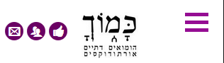

עבודה על התבנית החדשה
להלן תצלום מסך של האתר. מעבר עכבר על חלקי התצלום יאירו את החלקים שלו, ולחיצה על חלק תוביל להסברים עליו
סמליל
- איך הוא נראה:
- הגדרה:
- סמליל העמותה.
- היכן מגדירים אותו:
- הוא מוגדר באופן תכנותי. לעת עתה אין שליטה בו מתוך ממשק הניהול. יתכן שבעתיד ניתן יהיה לשנות אותו לסמלילים מותאמים לארועים מיוחדים כגון חגים.
- איך משנים טקסט:
- הסמליל מסתיר את שם האתר. אם רוצים לשנות את שם האתר, עושים זאת בממשק הניהול: בתפריט הימני בוחרים הגדרות, ובתת התפריט בוחרים כללי. במסך שנפתח, משנים את כותרת האתר.
- התנהגות בגרסת נייד:
- עובר לאמצע במקום להיות בצד ימין, וקטן עם הקטנת הרזולוציה

חיפוש
- איך הוא נראה:
- הגדרה:
- שדה חיפוש.
- היכן מגדירים אותו:
- הוא מוגדר באופן תכנותי. אין שליטה בו מתוך ממשק הניהול.
תוכן - עמודה מרכזית